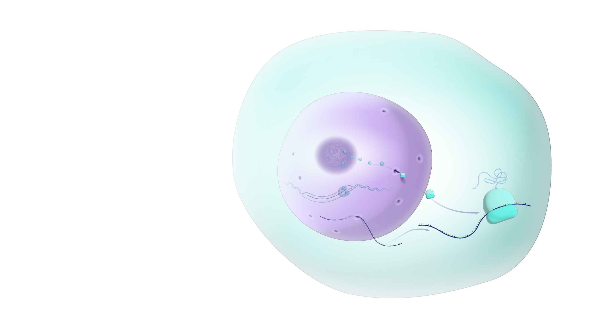
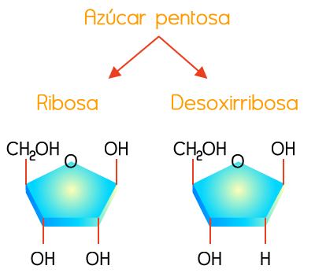
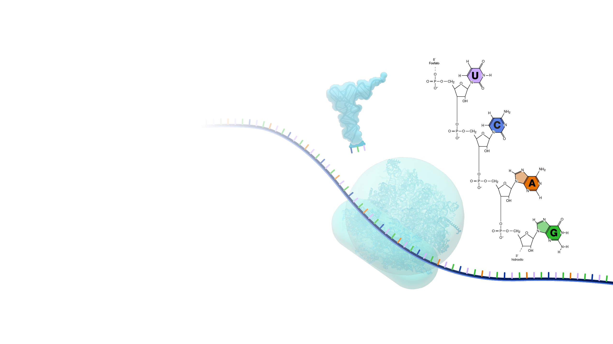
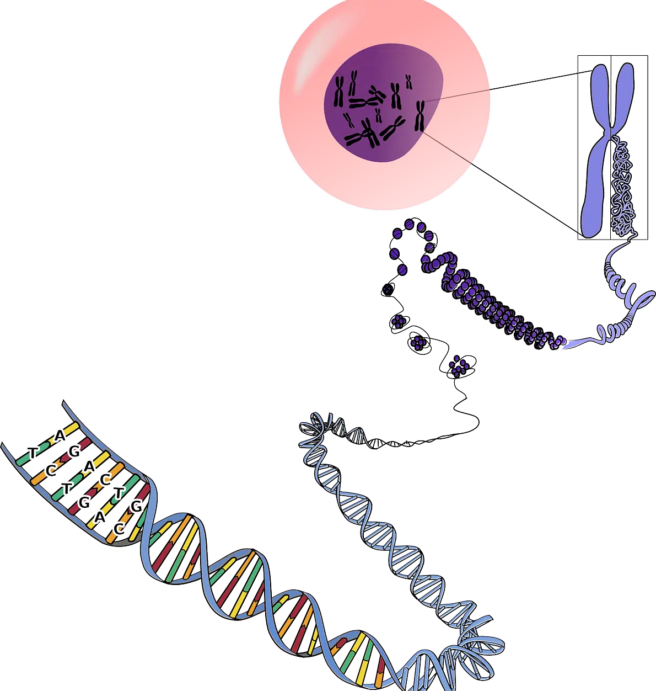
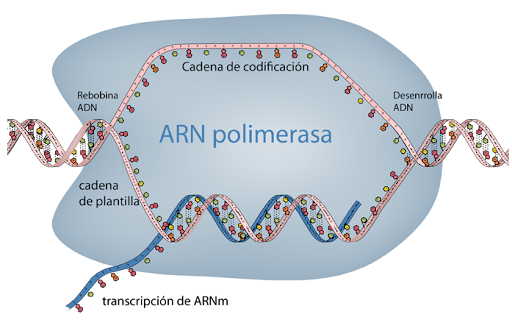

ARN
Es una molécula esencial presente en todas las células vivas que actúa como intermediario para transmitir las instrucciones del ADN y sintetizar proteínas

¿Donde se Ubica?
En ek nucleo o citoplasma de la celula

¿Qué azucar tiene?
Rbibosomas

Nivel 1
Secuencia lineal de nucleótidos (bases nitrogenadas).

Nivel 2
La cadena simple se pliega sobre sí misma mediante apareamiento de bases (A-U, G-C), formando horquillas, bucles y hélices.

Nivel 3
Plegamiento tridimensional complejo de la estructura secundaria, crucial para la función de la molécula
Méndez Rosales, M.E.
(2025)
Organismos: estructuras y procesos. Herencia y evolución
Book Mart, S.A de C.V.